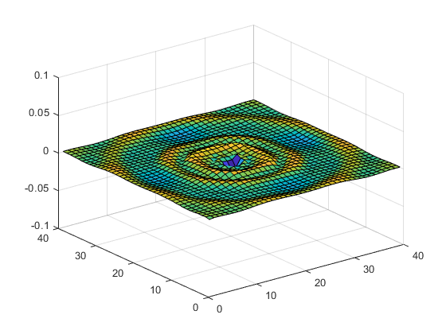

Acoustic Wave Propagation using Wave Equation
Model generation and reduction of acoustic wave propogation using the wave equation, i.e.

where  represents pressure and
represents pressure and  , where is the uniform density and is the speed of sound in the medium. In this version we will avoid state space and instead interpolate the transfer function.
, where is the uniform density and is the speed of sound in the medium. In this version we will avoid state space and instead interpolate the transfer function.
Contents
Semi-discretization
In order to perform model reduction, we first want to develop a model for our system which looks like:


We start by semi-discretizing the wave equation in space; this transforms the laplacian, which contains spacial first derivatives, into a collection of finite differences, i.e.

Laplacian Finite Difference Wikipedia
This transforms the wave equation from a 2nd order PDE into m*n 2nd order coupled ODEs, where the xy grid size is m by n.
We can then define the state:

where  is the columns of
is the columns of  (the pressure at each node) stacked to form a vector. Writing our equations out in state space form now, we obtain
(the pressure at each node) stacked to form a vector. Writing our equations out in state space form now, we obtain

where the equation for  expands to the coupled system of ODEs for the pressure at each node. As such,
expands to the coupled system of ODEs for the pressure at each node. As such,  must multiply out to the finite difference formula for the laplacian in each equation.
must multiply out to the finite difference formula for the laplacian in each equation.
Formulating the coefficient matrix
Define grid size and spacing (square for now)
clear; close all; clc; % rho=1.2;, c=345; rho=-1; c=1; n=40; m=n; dx=.25; dy=dx; fullDim=m*n;
Populate the lower left quadrant , i.e. the discretized laplacian operator
r=[-2/dx^2-2/dy^2 1/dy^2 zeros(1, m-2) 1/dx^2 zeros(1,fullDim-(m+1))]; A21=-rho * c^2 * toeplitz(r);
Set boundary element contributions to zero (artifact from making pressure matrix into a vector for state) (zero gives Dirichlet aka mirror BC).
for i = 1:n-1 A21(i*n+1,i*n)=0; A21(i*n,i*n+1)=0; end
Form the full A matrix
A=[zeros(n^2) eye(n^2);
A21 zeros(n^2)];
%plot(svd(A))
Solve the full model using ODE45
Set up initial conditions of a parabola and integrate forward in time
Initial condition setup
xx=1:1:n; yy=1:1:n; x0=20; y0=20; %choose C = height of parabola C=.05; k=15; % how many grid space for the radius of the parabola beta=C/(k*dy)^2; alfa=beta; ff=zeros(n); for i=1:n for j=1:n if -alfa*(xx(i) -x0)^2-beta*(yy(j)-y0)^2+C >= 0 ff(i,j)=-alfa*(xx(i) -x0)^2-beta*(yy(j)-y0)^2+C; end end end p0=zeros(1,2*m*n); p0(1:m*n)=ff(:)'; tspan = [0 1]; [t, p] = ode45(@(t,p) myfun(t,p,A), tspan, p0); for k = 1:size(p,1) lis(k)=sum(p(k,:)); end for k = 1:size(p,1) surf(xx,yy,vectomat(p(k,:),m,n)); axis([0 m 0 n -.1 .1]) drawnow; Mframes(k) = getframe; end %F=movie(Mframes,1,60); function dp = myfun(t,p,A) dp=A*p; end